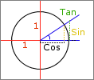

Matematiikka : funktiot
| KUVAUS |
|
Laskee kulman sinin. Kulma annetaan asteina. Tätä funktiota käytetään lähinnä apukeinona laskemaan paljonko pisteen pitää liikkua pystysuunnassa, kun tiedetään liikkeen suunta (kulma) ja nopeus.  Oletetaan, että haluat laskea seuraavat ammuksen koordinaatit. Ammus on laukaistu kulmassa 60 astetta, nopeudella 5. Tästä voidaan muodostaa suorakulmainen kolmio. Ammus kulkee vinoa sivua pitkin. Sin laskee tämän kolmion pystysivun pituuden. Siten y# = y# - Sin (60) * 5. Tulos on aina desimaaliluku väliltä -1 ja 1. Sinin pariksi tarvitset kosinia (kts. Cos). |
| KÄYTTÖ | |
|
| ESIMERKKI | |
|
<<TAKAISIN